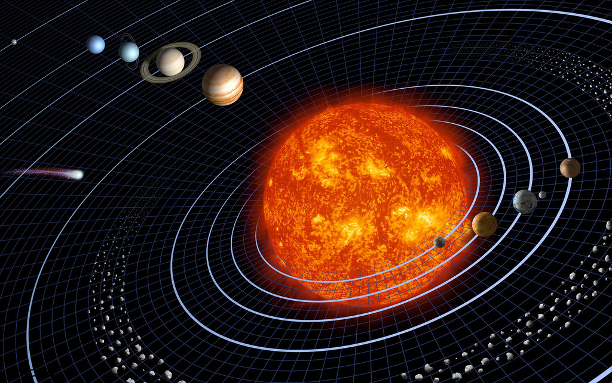
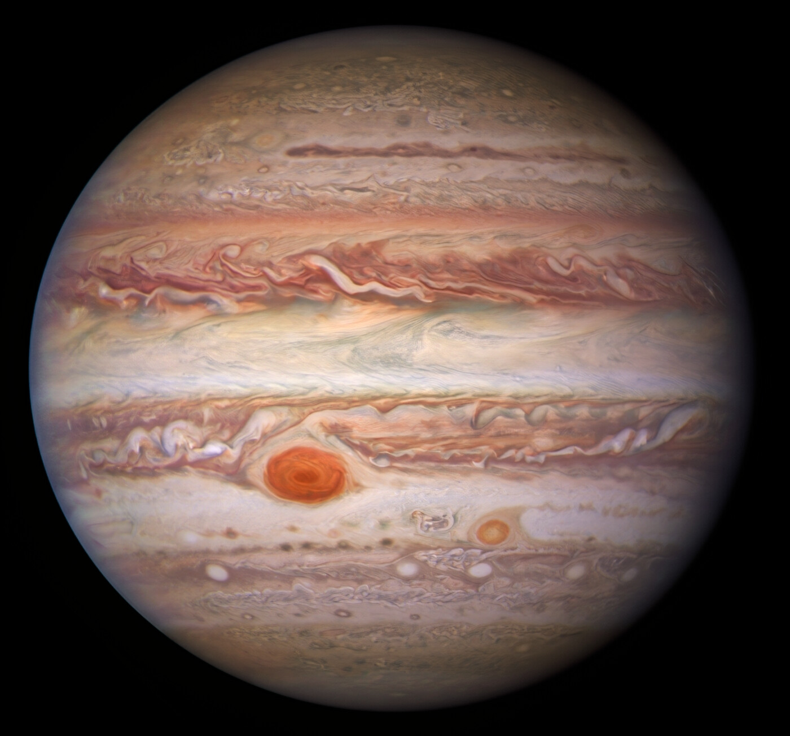

These are the eight planets of our solar system in order from distance to the Sun.
The four inner planets include Mercury, Venus, Earth, and Mars. They are made of rock, hence the nickname "Rocky Planets".
The four outer planets are Jupiter, Saturn, Uranus, and Neptune. They are all made of gas, mostly hydrogen and helium, although they do consist of other gases. Due to their size, they are known as the gas giants.
It's a common myth that Jupiter is a "failed star". However, this isn't the case at all. While its size is impressive as it is two times larger than all planets combined, it's nowhere near large enough to become a star. Objects that are almost stars are known as Brown Dwarfs and to be one, Jupiter would need to be over 13 times bigger. To perform nuclear fusion, Jupiter would need to be over 80 times bigger.
